<!DOCTYPE html>
<html>
<head><meta name="generator" content="Hexo 3.9.0">
  <meta charset="utf-8">
  

  
  <title>epaas-doc</title>
  <meta name="viewport" content="width=device-width, initial-scale=1, maximum-scale=1">
  <meta name="description" content="epaas操作文档,详细讲解epaas容器云平台操作">
<meta property="og:type" content="website">
<meta property="og:title" content="epaas-doc">
<meta property="og:url" content="http://yoursite.com/index.html">
<meta property="og:site_name" content="epaas-doc">
<meta property="og:description" content="epaas操作文档,详细讲解epaas容器云平台操作">
<meta property="og:locale" content="default">
<meta name="twitter:card" content="summary">
<meta name="twitter:title" content="epaas-doc">
<meta name="twitter:description" content="epaas操作文档,详细讲解epaas容器云平台操作">
  
    <link rel="alternate" href="/atom.xml" title="epaas-doc" type="application/atom+xml">
  
  
    <link rel="icon" href="/favicon.png">
  
  
    <link href="//fonts.googleapis.com/css?family=Source+Code+Pro" rel="stylesheet" type="text/css">
  
  <link rel="stylesheet" href="/css/style.css">
</head>
</html>
<body>
  <div id="container">
    <div id="wrap">
      <header id="header">
  <div id="banner"></div>
  <div id="header-outer" class="outer">
    <div id="header-title" class="inner">
      <h1 id="logo-wrap">
        <a href="/" id="logo">epaas-doc</a>
      </h1>
      
        <h2 id="subtitle-wrap">
          <a href="/" id="subtitle">epaas-操作文档</a>
        </h2>
      
    </div>
    <div id="header-inner" class="inner">
      <nav id="main-nav">
        <a id="main-nav-toggle" class="nav-icon"></a>
        
          <a class="main-nav-link" href="/">Home</a>
        
          <a class="main-nav-link" href="/archives">Archives</a>
        
      </nav>
      <nav id="sub-nav">
        
          <a id="nav-rss-link" class="nav-icon" href="/atom.xml" title="RSS Feed"></a>
        
        <a id="nav-search-btn" class="nav-icon" title="Search"></a>
      </nav>
      <div id="search-form-wrap">
        <form action="//google.com/search" method="get" accept-charset="UTF-8" class="search-form"><input type="search" name="q" class="search-form-input" placeholder="Search"><button type="submit" class="search-form-submit">&#xF002;</button><input type="hidden" name="sitesearch" value="http://yoursite.com"></form>
      </div>
    </div>
  </div>
</header>
      <div class="outer">
        <section id="main">
  
    <article id="post-app" class="article article-type-post" itemscope itemprop="blogPost">
  <div class="article-meta">
    <a href="/2019/07/11/app/" class="article-date">
  <time datetime="2019-07-11T08:59:42.000Z" itemprop="datePublished">2019-07-11</time>
</a>
    
  </div>
  <div class="article-inner">
    
    
      <header class="article-header">
        
  
    <h1 itemprop="name">
      <a class="article-title" href="/2019/07/11/app/">app</a>
    </h1>
  

      </header>
    
    <div class="article-entry" itemprop="articleBody">
      
        <h1 id="镜像创建无状态Deployment应用"><a href="#镜像创建无状态Deployment应用" class="headerlink" title="镜像创建无状态Deployment应用"></a>镜像创建无状态Deployment应用</h1><p>您可以使用镜像创建一个可公网访问的nginx应用。</p>
<ol>
<li><p>登录<a href="http://rongqiyun-dev-epaas-ui.hqy.io/" target="_blank" rel="noopener">epaas平台</a>。 </p>
</li>
<li><p>在登录后，单击左侧导航栏中的<strong>应用</strong> &gt; <strong>无状态</strong>，然后单击页面的<strong>创建</strong>按钮。 </p>
</li>
<li><p>设置<strong>应用基本信息</strong>：设置<strong>应用名称</strong>、<strong>副本数</strong>、<strong>注解</strong>和<strong>标签</strong>，副本数量即应用包含的Pod数量。然后单击<strong>下一步</strong> 进入容器配置页面。</p>
<p>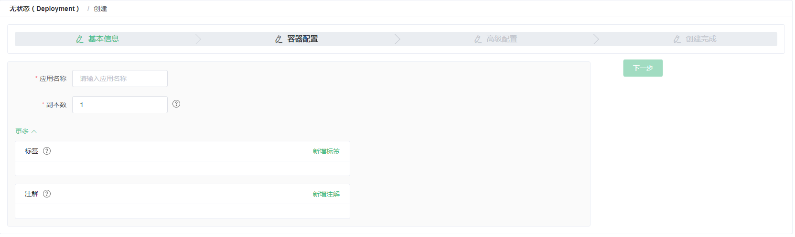</p>
</li>
<li><p>设置<strong>容器配置</strong>。 </p>
<p><strong>说明：</strong> 您可为应用的Pod设置多个容器。</p>
<ol>
<li><p>设置容器的基本配置。 </p>
<ul>
<li><strong>选择镜像</strong>：您可以选择镜像仓库中已有的镜像。</li>
<li><strong>镜像版本</strong>：您可以选择镜像仓库中对应镜像的版本。</li>
<li><strong>所需资源</strong>：可指定该应用所能使用的资源上限，包括 CPU 和 内存两种资源，防止占用过多资源。其中，CPU 资源的单位为 millicores，即一个核的千分之一；内存的单位为 Bytes，可以为 Gi、Mi 或 Ki。</li>
<li><strong>镜像拉取策略</strong>：为了提高效率，容器服务会对镜像进行缓存。部署时，如果发现镜像 Tag 与本地缓存的一致，则会直接复用而不重新拉取。所以，如果您基于上层业务便利性等因素考虑，在做代码和镜像变更时没有同步修改 Tag ，就会导致部署时还是使用本地缓存内旧版本镜像。而勾选该选项后，会忽略缓存，每次部署时重新拉取镜像，确保使用的始终是最新的镜像和代码。</li>
<li><strong>GPU设置</strong>：为AI部分提供GPU资源，勾选即可设置。<br>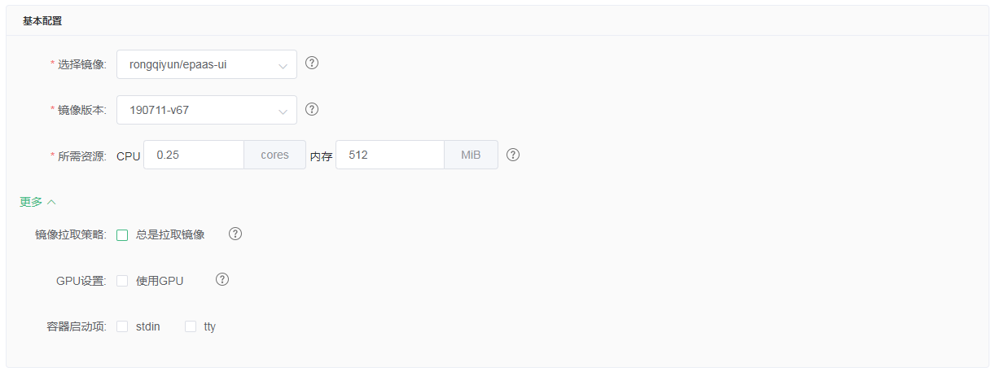</li>
</ul>
</li>
<li><p>配置环境变量。 </p>
<p>支持通过键值对的形式为 Pod 配置环境变量。用于给 Pod 添加环境标志或传递配置等，具体请参见 <a href="https://kubernetes.io/docs/tasks/inject-data-application/environment-variable-expose-pod-information/?spm=0.0.0.0.8VJbrE" target="_blank" rel="noopener">Pod variable</a>。<br>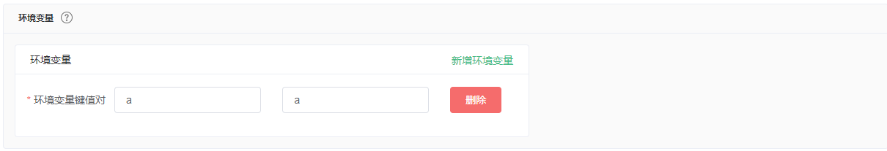</p>
</li>
<li><p>配置数据卷信息。 </p>
<p>支持配置本地存储和云存储。</p>
<ul>
<li><strong>本地存储</strong>：支持主机目录（hostpath）、配置项（configmap）、保密字典（secret）和临时目录，将对应的挂载源挂载到容器路径中。更多信息参见 <a href="https://kubernetes.io/docs/concepts/storage/volumes/?spm=0.0.0.0.8VJbrE" target="_blank" rel="noopener">volumes</a>。</li>
<li><strong>云存储</strong>：支持云盘/NAS/OSS三种云存储类型。<br>本例中配置了一个云盘类型的数据卷，将该云盘挂载到容器中/tmp 路径下，在该路径下生成的容器数据会存储到云盘中。</li>
</ul>
<p>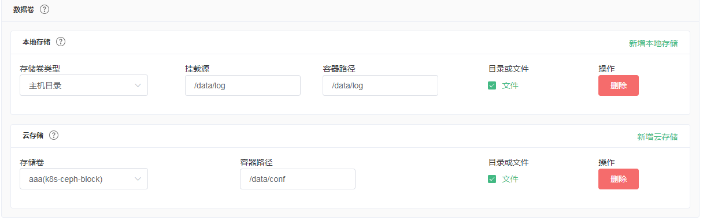</p>
</li>
<li><p>设置<strong>健康检查</strong> </p>
<p>支持存活检查（liveness）和就绪检查（Readiness）。存活检查用于检测何时重启容器；就绪检查确定容器是否已经就绪，且可以接受流量。关于健康检查的更多信息，请参见<a href="https://kubernetes.io/docs/tasks/configure-pod-container/configure-liveness-readiness-probes" target="_blank" rel="noopener">https://kubernetes.io/docs/tasks/configure-pod-container/configure-liveness-readiness-probes</a>。</p>
<p>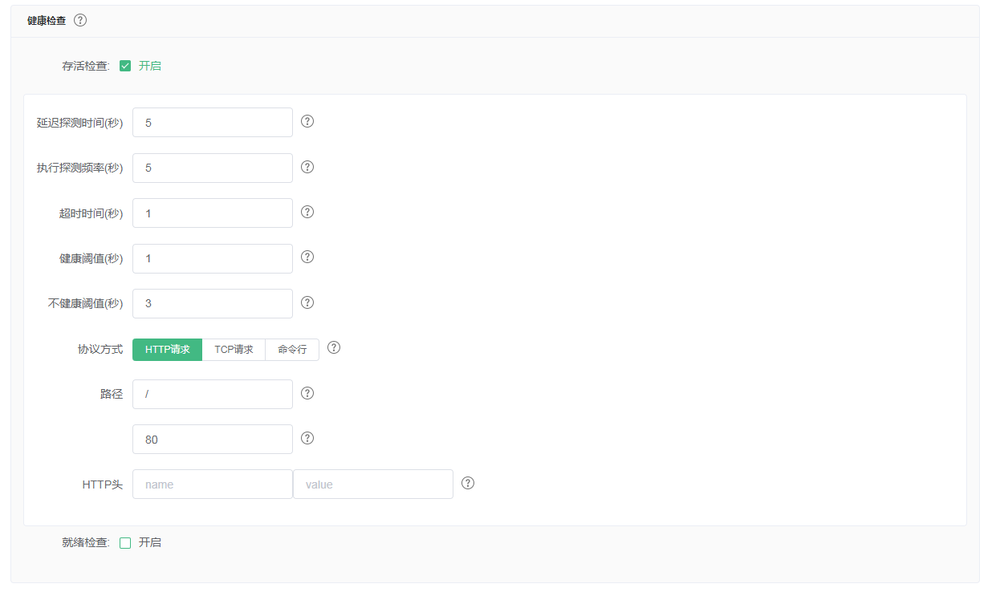</p>
<p><strong>HTTP请求</strong>:即向容器发送一个HTTPget 请求，支持的参数包括：</p>
<ul>
<li>协议：HTTP/HTTPS。</li>
<li>路径：访问HTTP server 的路径。</li>
<li>端口：容器暴露的访问端口或端口名，端口号必须介于1~65535。</li>
<li>HTTP头：即HTTPHeaders，HTTP请求中自定义的请求头，HTTP允许重复的header。支持键值对的配置方式。</li>
<li>延迟探测时间（秒）：即<strong>initialDelaySeconds</strong>，容器启动后第一次执行探测时需要等待多少秒，默认为3秒。</li>
<li>执行探测频率（秒）：即<strong>periodSeconds</strong>，指执行探测的时间间隔，默认为10s，最低为1s。</li>
<li>超时时间（秒）：即<strong>timeoutSeconds</strong>，探测超时时间。默认1秒，最小1秒。</li>
<li>健康阈值：探测失败后，最少连续探测成功多少次才被认定为成功。默认是1，最小值是1。对于存活检查（liveness）必须是1。</li>
<li>不健康阈值：探测成功后，最少连续探测失败多少次才被认定为失败。默认是3。最小值是1。</li>
</ul>
<p><strong>TCP连接</strong>:即向容器发送一个TCP Socket，kubelet将尝试在指定端口上打开容器的套接字。 如果可以建立连接，容器被认为是健康的，如果不能就认为是失败的。支持的参数包括：        </p>
<ul>
<li>端口：容器暴露的访问端口或端口名，端口号必须介于1~65535。</li>
<li>延迟探测时间（秒）：即<strong>initialDelaySeconds</strong>，容器启动后第一次执行探测时需要等待多少秒，默认为15秒。</li>
<li>执行探测频率（秒）：即<strong>periodSeconds</strong>，指执行探测的时间间隔，默认为10s，最低为1s。</li>
<li>超时时间（秒）：即<strong>timeoutSeconds</strong>，探测超时时间。默认1秒，最小1秒。</li>
<li>健康阈值：探测失败后，最少连续探测成功多少次才被认定为成功。默认是1，最小值是1。对于存活检查（liveness）必须是1。</li>
<li>不健康阈值：探测成功后，最少连续探测失败多少次才被认定为失败。默认是3。最小值是1。</li>
</ul>
<p><strong>命令行</strong>:通过在容器中执行探针检测命令，来检测容器的健康情况。支持的参数包括：        </p>
<ul>
<li>命令行：用于检测容器健康情况的探测命令。</li>
<li>延迟探测时间（秒）：即<strong>initialDelaySeconds</strong>，容器启动后第一次执行探测时需要等待多少秒，默认为5秒。</li>
<li>执行探测频率（秒）：即<strong>periodSeconds</strong>，指执行探测的时间间隔，默认为10s，最低为1s。</li>
<li>超时时间（秒）：即<strong>timeoutSeconds</strong>，探测超时时间。默认1秒，最小1秒。</li>
<li>健康阈值：探测失败后，最少连续探测成功多少次才被认定为成功。默认是1，最小值是1。对于存活检查（liveness）必须是1。</li>
<li>不健康阈值：探测成功后，最少连续探测失败多少次才被认定为失败。默认是3。最小值是1。</li>
</ul>
</li>
<li><p>配置生命周期。 </p>
<p>您可以为容器的生命周期配置容器启动项、启动执行、启动后处理和停止前处理。具体参见<a href="https://kubernetes.io/docs/tasks/configure-pod-container/attach-handler-lifecycle-event/" target="_blank" rel="noopener">https://kubernetes.io/docs/tasks/configure-pod-container/attach-handler-lifecycle-event/</a>。</p>
<ul>
<li><strong>启动执行命令</strong>：为容器设置预启动命令。</li>
<li><strong>启动执行参数</strong>：为容器设置预启动参数。</li>
<li><strong>启动后处理</strong>：为容器设置启动后的命令。</li>
<li><strong>停止前处理</strong>：为容器设置预结束命令。</li>
</ul>
<p>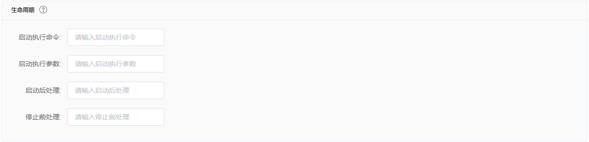</p>
</li>
</ol>
</li>
<li><p>完成容器配置后，单击 <strong>下一步</strong>。 </p>
</li>
<li><p>进行高级设置。 </p>
<ol>
<li><p>设置<strong>访问设置</strong>。 您可以设置暴露后端Pod的方式，最后单击<strong>创建</strong>。本例中选择ClusterIP服务和路由（Route），构建一个可公网访问的nginx应用。</p>
<p><strong>说明：</strong> </p>
<p>针对应用的通信需求，您可灵活进行访问设置：</p>
<ul>
<li>内部应用：对于只在集群内部工作的应用，您可根据需要创建ClusterIP或NodePort类型的服务，来进行内部通信。</li>
<li>外部应用：对于需要暴露到公网的应用，您可以采用以下方式进行访问设置：<ul>
<li>创建ClusterIP、NodePort类型的服务，以及路由（Route）：通过路由提供公网访问能力。<br>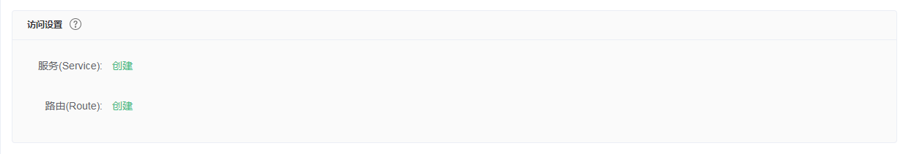</li>
</ul>
</li>
</ul>
<ol>
<li><p>在服务栏单击<strong>创建</strong>，在弹出的对话框中进行配置，最后单击<strong>创建</strong>。</p>
<p>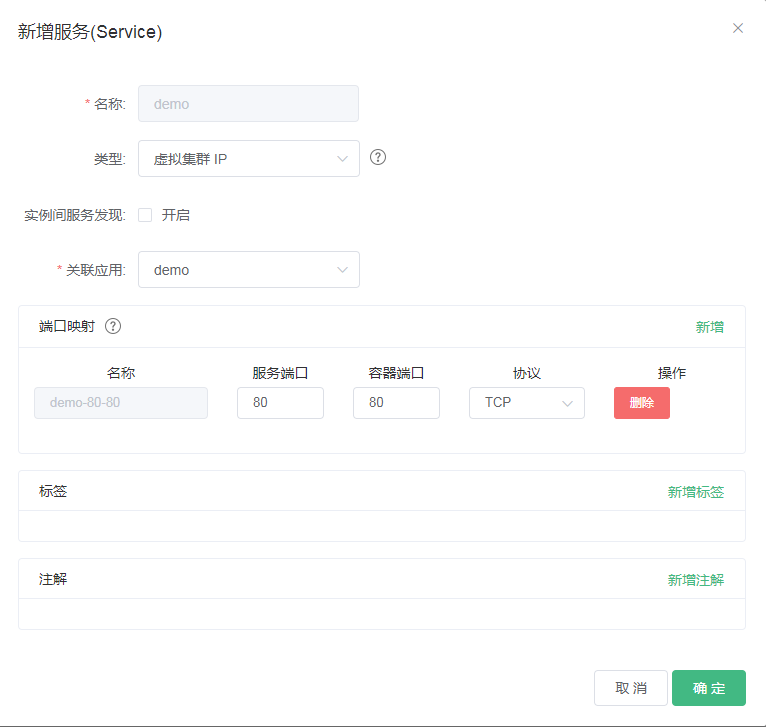</p>
<ul>
<li><strong>名称</strong>：您可自主设置，默认为<code>applicationname</code>。</li>
<li><strong>类型</strong>：您可以从下面 3 种服务类型中进行选择。<ul>
<li>虚拟集群 IP：即 ClusterIP，指通过集群的内部 IP 暴露服务，选择该项，服务只能够在集群内部可以访问。</li>
<li>节点端口：即 NodePort，通过每个 Node 上的 IP 和静态端口（NodePort）暴露服务。NodePort 服务会路由到 ClusterIP 服务，这个 ClusterIP 服务会自动创建。通过请求 <code>&lt;NodeIP&gt;:&lt;NodePort&gt;</code>，可以从集群的外部访问一个 NodePort 服务。</li>
<li>负载均衡：即 LoadBalancer，是阿里云提供的负载均衡服务，可选择公网访问或内网访问。负载均衡可以路由到 NodePort 服务和 ClusterIP 服务。</li>
</ul>
</li>
<li><strong>端口映射</strong>：您需要添加服务端口和容器端口，若<strong>类型</strong>选择为节点端口，还需要自己设置节点端口，防止端口出现冲突。支持 TCP/UDP 协议。</li>
<li><strong>注解</strong>：为该服务添加一个注解（annotation）。</li>
<li><strong>标签</strong>：您可为该服务添加一个标签，标识该服务。</li>
</ul>
</li>
<li><p>在路由栏单击<strong>创建</strong>，在弹出的对话框中，为后端Pod配置路由规则，最后单击<strong>创建</strong>。</p>
<p><strong>说明：</strong> 通过镜像创建应用时，您仅能为一个服务创建路由（Route）。</p>
<p>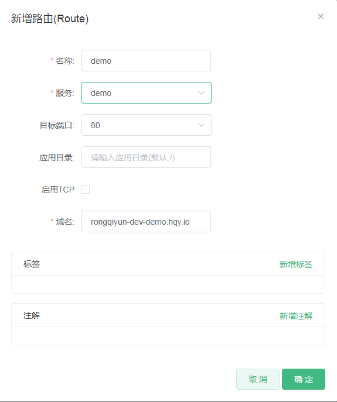</p>
</li>
<li><p>在访问设置栏中，您可看到创建完毕的服务和路由，您可单击<strong>变更</strong>和<strong>删除</strong>进行二次配置。</p>
<p>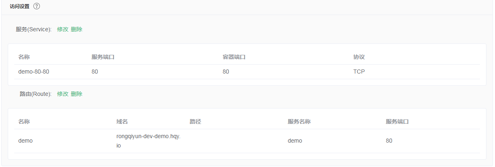</p>
</li>
</ol>
</li>
<li><p><strong>容器组水平伸缩</strong>。 </p>
<p>您可勾选是否开启<strong>容器组水平伸缩</strong>，为了满足应用在不同负载下的需求，容器服务支持服容器组（Pod）的弹性伸缩，即根据容器 CPU 和内存资源占用情况自动调整容器组数量。</p>
<p>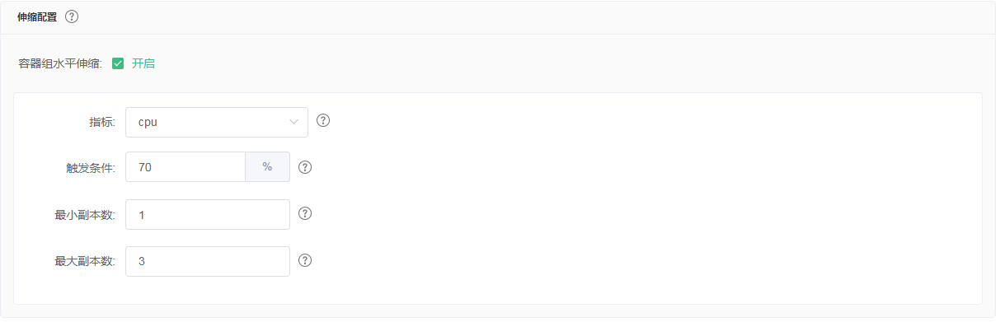</p>
<p><strong>说明：</strong> 若要启用自动伸缩，您必须为容器设置所需资源，否则容器自动伸缩无法生效。参见容器基本配置环节。</p>
<ul>
<li><strong>指标</strong>：支持CPU和内存，需要和设置的所需资源类型相同。</li>
<li><strong>触发条件</strong>：资源使用率的百分比，超过该使用量，容器开始扩容。</li>
<li><strong>最大容器数量</strong>：该Deployment可扩容的容器数量上限。</li>
<li><strong>最小容器数量</strong>：该Deployment可缩容的容器数量下限。</li>
</ul>
</li>
<li><p>设置<strong>调度设置</strong>。 </p>
<p>您可设置升级方式、节点亲和性、应用亲和性和应用非亲和性，详情参见<a href="https://kubernetes.io/docs/concepts/configuration/assign-pod-node/#affinity-and-anti-affinity" target="_blank" rel="noopener">https://kubernetes.io/docs/concepts/configuration/assign-pod-node/#affinity-and-anti-affinity</a>。</p>
<p><strong>说明：</strong> 亲和性调度依赖节点标签和Pod标签，您可使用内置的标签进行调度；也可预先为节点、Pod配置相关的标签。</p>
<ol>
<li><p>设置<strong>升级方式</strong>。</p>
<p>升级方式包括滚动升级（rollingupdate）和替换升级（recreate），详细请参见<a href="https://kubernetes.io/zh/docs/concepts/workloads/controllers/deployment/" target="_blank" rel="noopener">https://kubernetes.io/zh/docs/concepts/workloads/controllers/deployment/</a></p>
</li>
<li><p>设置<strong>节点亲和性</strong>，通过Node节点的Label标签进行设置。</p>
<p>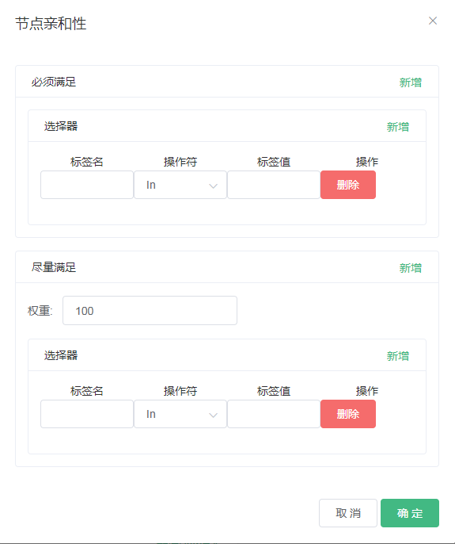</p>
<p>节点调度支持硬约束和软约束（Required/Preferred），以及丰富的匹配表达式（In, NotIn, Exists, DoesNotExist. Gt, and Lt）：</p>
<ul>
<li><strong>必须满足</strong>，即硬约束，一定要满足，对应requiredDuringSchedulingIgnoredDuringExecution，效果与<code>NodeSelector</code>相同。本例中Pod只能调度到具有对应标签的Node节点。您可以定义多条硬约束规则，但只需满足其中一条。</li>
<li><strong>尽量满足</strong>，即软约束，不一定满足，对应preferredDuringSchedulingIgnoredDuringExecution。本例中，调度会尽量不调度Pod到具有对应标签的Node节点。您还可为软约束规则设定权重，具体调度时，若存在多个符合条件的节点，权重最高的节点会被优先调度。您可定义多条软约束规则，但必须满足全部约束，才会进行调度。</li>
</ul>
</li>
<li><p>设置<strong>应用亲和性调度</strong>。决定应用的Pod可以和哪些Pod部署在同一拓扑域。例如，对于相互通信的服务，可通过应用亲和性调度，将其部署到同一拓扑域（如同一个主机）中，减少它们之间的网络延迟。</p>
<p>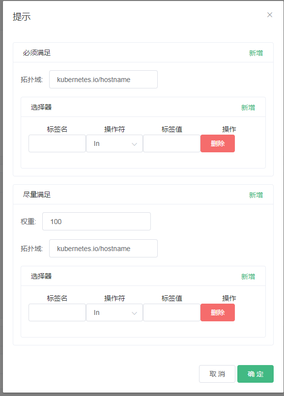</p>
<p>根据节点上运行的Pod的标签（Label）来进行调度，支持硬约束和软约束，匹配的表达式有：<code>In, NotIn, Exists, DoesNotExist</code>。</p>
<ul>
<li><p><strong>必须满足</strong>，即硬约束，一定要满足，对应requiredDuringSchedulingIgnoredDuringExecution，Pod的亲和性调度必须要满足后续定义的约束条件。</p>
<ul>
<li><strong>命名空间</strong>：该策略是依据Pod的Label进行调度，所以会受到命名空间的约束。</li>
<li><strong>拓扑域</strong>：即topologyKey，指定调度时作用域，这是通过Node节点的标签来实现的，例如指定为<code>kubernetes.io/hostname</code>，那就是以Node节点为区分范围；如果指定为<code>beta.kubernetes.io/os</code>，则以Node节点的操作系统类型来区分。</li>
<li><strong>选择器</strong>：单击选择器右侧的加号按钮，您可添加多条硬约束规则。</li>
<li><strong>查看应用列表</strong>：单击<strong>应用列表</strong>，弹出对话框，您可在此查看各命名空间下的应用，并可将应用的标签导入到亲和性配置页面。</li>
<li>硬约束条件：设置已有应用的标签、操作符和标签值。本例中，表示将待创建的应用调度到该主机上，该主机运行的已有应用具有<code>app:nginx</code>标签。</li>
</ul>
</li>
<li><p><strong>尽量满足</strong>，即软约束，不一定满足，对应preferredDuringSchedulingIgnoredDuringExecution。Pod的亲和性调度会尽量满足后续定义的约束条件。对于软约束规则，您可配置每条规则的权重，其他配置规则与硬约束规则相同。</p>
<p><strong>说明：</strong> <strong>权重</strong>：设置一条软约束规则的权重，介于1-100，通过算法计算满足软约束规则的节点的权重，将Pod调度到权重最高的节点上。</p>
</li>
</ul>
</li>
<li><p>设置<strong>应用非亲和性调度</strong>，决定应用的Pod不与哪些Pod部署在同一拓扑域。应用非亲和性调度的场景包括：</p>
<ul>
<li>将一个服务的Pod分散部署到不同的拓扑域（如不同主机）中，提高服务本身的稳定性。</li>
<li>给予Pod一个节点的独占访问权限来保证资源隔离，保证不会有其它Pod来分享节点资源。</li>
<li>把可能会相互影响的服务的Pod分散在不同的主机上。</li>
</ul>
<p><strong>说明：</strong> 应用非亲和性调度的设置方式与亲和性调度相同，但是相同的调度规则代表的意思不同，请根据使用场景进行选择。</p>
</li>
</ol>
</li>
</ol>
</li>
<li><p>最后单击<strong>创建</strong>。 </p>
</li>
<li><p>创建成功后，默认进入创建完成页面。 </p>
<p>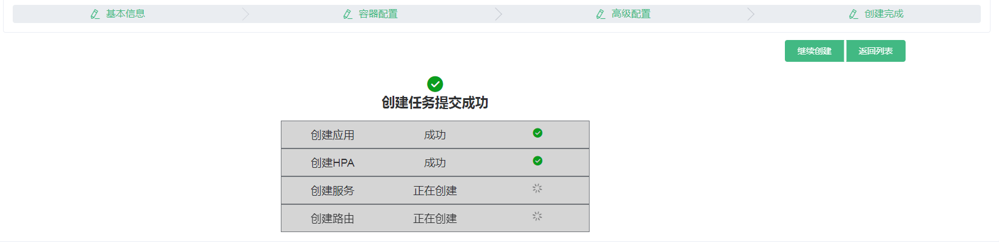</p>
</li>
</ol>

      
    </div>
    <footer class="article-footer">
      <a data-url="http://yoursite.com/2019/07/11/app/" data-id="cjxygoenh0001zcuap679goo9" class="article-share-link">Share</a>
      
      
    </footer>
  </div>
  
</article>


  
    <article id="post-hello-world" class="article article-type-post" itemscope itemprop="blogPost">
  <div class="article-meta">
    <a href="/2019/07/11/hello-world/" class="article-date">
  <time datetime="2019-07-11T08:53:49.724Z" itemprop="datePublished">2019-07-11</time>
</a>
    
  </div>
  <div class="article-inner">
    
    
      <header class="article-header">
        
  
    <h1 itemprop="name">
      <a class="article-title" href="/2019/07/11/hello-world/">Hello World</a>
    </h1>
  

      </header>
    
    <div class="article-entry" itemprop="articleBody">
      
        <p>Welcome to <a href="https://hexo.io/" target="_blank" rel="noopener">Hexo</a>! This is your very first post. Check <a href="https://hexo.io/docs/" target="_blank" rel="noopener">documentation</a> for more info. If you get any problems when using Hexo, you can find the answer in <a href="https://hexo.io/docs/troubleshooting.html" target="_blank" rel="noopener">troubleshooting</a> or you can ask me on <a href="https://github.com/hexojs/hexo/issues" target="_blank" rel="noopener">GitHub</a>.</p>
<h2 id="Quick-Start"><a href="#Quick-Start" class="headerlink" title="Quick Start"></a>Quick Start</h2><h3 id="Create-a-new-post"><a href="#Create-a-new-post" class="headerlink" title="Create a new post"></a>Create a new post</h3><figure class="highlight bash"><table><tr><td class="gutter"><pre><span class="line">1</span><br></pre></td><td class="code"><pre><span class="line">$ hexo new <span class="string">"My New Post"</span></span><br></pre></td></tr></table></figure>

<p>More info: <a href="https://hexo.io/docs/writing.html" target="_blank" rel="noopener">Writing</a></p>
<h3 id="Run-server"><a href="#Run-server" class="headerlink" title="Run server"></a>Run server</h3><figure class="highlight bash"><table><tr><td class="gutter"><pre><span class="line">1</span><br></pre></td><td class="code"><pre><span class="line">$ hexo server</span><br></pre></td></tr></table></figure>

<p>More info: <a href="https://hexo.io/docs/server.html" target="_blank" rel="noopener">Server</a></p>
<h3 id="Generate-static-files"><a href="#Generate-static-files" class="headerlink" title="Generate static files"></a>Generate static files</h3><figure class="highlight bash"><table><tr><td class="gutter"><pre><span class="line">1</span><br></pre></td><td class="code"><pre><span class="line">$ hexo generate</span><br></pre></td></tr></table></figure>

<p>More info: <a href="https://hexo.io/docs/generating.html" target="_blank" rel="noopener">Generating</a></p>
<h3 id="Deploy-to-remote-sites"><a href="#Deploy-to-remote-sites" class="headerlink" title="Deploy to remote sites"></a>Deploy to remote sites</h3><figure class="highlight bash"><table><tr><td class="gutter"><pre><span class="line">1</span><br></pre></td><td class="code"><pre><span class="line">$ hexo deploy</span><br></pre></td></tr></table></figure>

<p>More info: <a href="https://hexo.io/docs/deployment.html" target="_blank" rel="noopener">Deployment</a></p>

      
    </div>
    <footer class="article-footer">
      <a data-url="http://yoursite.com/2019/07/11/hello-world/" data-id="cjxygoen50000zcuazddfujzw" class="article-share-link">Share</a>
      
      
    </footer>
  </div>
  
</article>


  


</section>
        
          <aside id="sidebar">
  
    

  
    

  
    
  
    
  <div class="widget-wrap">
    <h3 class="widget-title">Archives</h3>
    <div class="widget">
      <ul class="archive-list"><li class="archive-list-item"><a class="archive-list-link" href="/archives/2019/07/">July 2019</a></li></ul>
    </div>
  </div>


  
    
  <div class="widget-wrap">
    <h3 class="widget-title">Recent Posts</h3>
    <div class="widget">
      <ul>
        
          <li>
            <a href="/2019/07/11/app/">app</a>
          </li>
        
          <li>
            <a href="/2019/07/11/hello-world/">Hello World</a>
          </li>
        
      </ul>
    </div>
  </div>

  
</aside>
        
      </div>
      <footer id="footer">
  
  <div class="outer">
    <div id="footer-info" class="inner">
      &copy; 2019 wenjun.wei<br>
      Powered by <a href="http://hexo.io/" target="_blank">Hexo</a>
    </div>
  </div>
</footer>
    </div>
    <nav id="mobile-nav">
  
    <a href="/" class="mobile-nav-link">Home</a>
  
    <a href="/archives" class="mobile-nav-link">Archives</a>
  
</nav>
    

<script src="//ajax.googleapis.com/ajax/libs/jquery/2.0.3/jquery.min.js"></script>


  <link rel="stylesheet" href="/fancybox/jquery.fancybox.css">
  <script src="/fancybox/jquery.fancybox.pack.js"></script>


<script src="/js/script.js"></script>


  </div>
</body>
</html>